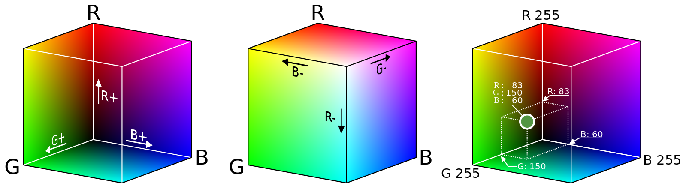

Color
IIC2026
Modelos y espacios de color
Color
IIC2026
¿Qué era el color?
- Los colores se experimentan como combinaciones de frecuencias de luz que entran a nuestros ojos.
- Reproducción aditiva, mediante emisión de luces que suma colores.
- Reproducción sustractiva, mediante mezcla de pigmentos que restan colores.
Modelos de color
Modelo aditivo: RGB.
Modelos de color
Modelo aditivo: RGB.
Modelos sustractivos: RYB y CMYK.
Modelos de color
Abstracciones que buscan representar los colores, muchas veces de forma matemática
Modelos de color: RGB
(40, 12, 89) o #2C0C59
Modelos de color: RGB
(40, 12, 89) o #2C0C59

(Fuente imagen: Wikimedia )
{kind=link}
Espacios de color
Organización reproducible de colores. Puede ser arbitraria, mediante nombres identificadores, o incluso matemática.
¿Modelo o espacio de color?
Se suelen usar indistintivamente, ya que están sumamamente relaciondados.
Rojo, verde y azul como canales
HSL y HSV
Alternativas al modelo RGB, utilizando canales más intuitivos:
- Matiz (hue)
- Saturación (saturation)
- Luminosidad o valor (lightness/value)
- Matiz (hue)
- Saturación (saturation)
- Luminosidad o valor (lightness/value)


(Fuente imagen: Wikipedia )